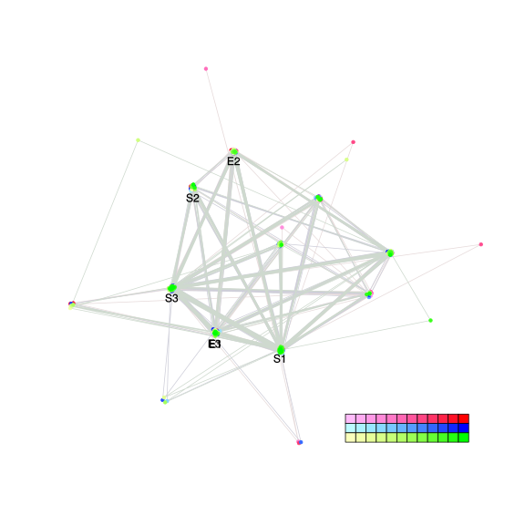
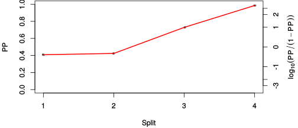
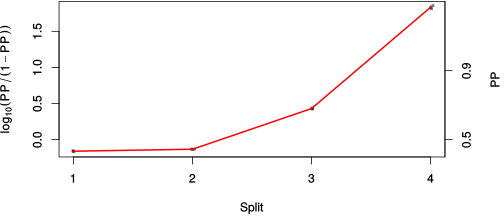

| chain # | burnin | subsample | Iterations (remaining) | command line | subdirectory | directory |
|---|---|---|---|---|---|---|
| 1 | 10000 | 1 | 90000 | bali-phy E6_AA_red3_Alpha.fas -s 80345 -n Alpha_c1 | Alpha_c1-1 | /DATA/work/ONCOGENEVOL/database/trees/Bali-Phy/red3/E6 |
| 2 | 10000 | 1 | 90000 | bali-phy E6_AA_red3_Alpha.fas -s 79435 -n Alpha_c2 | Alpha_c2-1 | /DATA/work/ONCOGENEVOL/database/trees/Bali-Phy/red3/E6 |
| 3 | 10000 | 1 | 90000 | bali-phy E6_AA_red3_Alpha.fas -s 46342 -n Alpha_c3 | Alpha_c3-1 | /DATA/work/ONCOGENEVOL/database/trees/Bali-Phy/red3/E6 |
| P(data|M) = -2240.403 +- 0.098 | Complete sample: 86 topologies | 95% Bayesian credible interval: 9 topologies |
Phylogeny Distribution

| Partition support: Summary |
| Partition support graph: SVG |
{kind=link}
| 50% consensus | Newick (+PP) | SVG | |||||
| 66% consensus | Newick (+PP) | SVG | |||||
| 80% consensus | Newick (+PP) | SVG | |||||
| 90% consensus | Newick (+PP) | SVG | |||||
| 95% consensus | Newick (+PP) | SVG | |||||
| 99% consensus | Newick (+PP) | SVG | |||||
| 100% consensus | Newick (+PP) | SVG | |||||
| MAP | Newick (+PP) | SVG | |||||
| greedy | Newick (+PP) | SVG |
{kind=link}
{kind=link}
{kind=link}
{kind=link}
{kind=link}
{kind=link}
{kind=link}
{kind=link}
Alignment Distribution
Partition 1
| Diff | Min. %identity | # Sites | Constant | Informative | ||||
|---|---|---|---|---|---|---|---|---|
| Initial | FASTA | HTML | Diff | 1.4% | 186 | 1 (0.538%) | 57 (30.6%) | |
| Best (WPD) | FASTA | HTML | AU | 20.2% | 261 | 21 (8.05%) | 33 (12.6%) |
Mixing
{kind=link}
{kind=link}
| burnin (scalar) | ESS (scalar) | ESS (partition) | ASDSF | MSDSF | PSRF-CI80% | PSRF-RCF |
|---|---|---|---|---|---|---|
| 1061 | 3830 | 65596.776 | 0.002 | 0.003 | 1.001 | 1.004 |
Projection of RF distances for the first 3 chains3D | Variation of split PPs across chains |
Scalar variables
| Statistic | Median | 95% BCI | ACT | ESS | burnin | PSRF-CI80% | PSRF-RCF |
|---|---|---|---|---|---|---|---|
| prior | -120.5 | (-146.2, -97.88) | 70.49 | 3830 | 1061 | 0.9999 | 0.9991 |
| prior_A1 | -99.06 | (-120.9, -78.45) | 47.83 | 5644 | 943 | 1.001 | 0.999 |
| likelihood | -2229 | (-2242, -2216) | 35.82 | 7538 | 198 | 1 | 1.001 |
| logp | -2350 | (-2372, -2330) | 59.07 | 4570 | 572 | 0.9999 | 0.9989 |
| Heat.beta | 1 | ||||||
| Scale1 | 3.408 | (1.449, 6.535) | 1.016 | 265835 | 86 | 1 | 1 |
| S1.F.pi.A | 0.04896 | (0.03341, 0.06621) | 7.703 | 35051 | 135 | 1 | 1.001 |
| S1.F.pi.R | 0.08858 | (0.06727, 0.1125) | 9.104 | 29657 | 265 | 1 | 0.9978 |
| S1.F.pi.N | 0.03552 | (0.02308, 0.04967) | 7.699 | 35070 | 587 | 0.9995 | 1.003 |
| S1.F.pi.D | 0.05187 | (0.03481, 0.07032) | 8.096 | 33350 | 349 | 1 | 1.001 |
| S1.F.pi.C | 0.03634 | (0.02105, 0.05417) | 7.989 | 33794 | 385 | 0.9999 | 0.9983 |
| S1.F.pi.Q | 0.04103 | (0.02796, 0.05539) | 7.896 | 34194 | 602 | 0.9999 | 1 |
| S1.F.pi.E | 0.06463 | (0.04683, 0.08434) | 7.812 | 34564 | 507 | 1 | 1 |
| S1.F.pi.G | 0.04579 | (0.02825, 0.06544) | 7.909 | 34139 | 243 | 0.9999 | 0.9992 |
| S1.F.pi.H | 0.03285 | (0.01996, 0.04746) | 7.824 | 34509 | 284 | 0.9999 | 0.9984 |
| S1.F.pi.I | 0.06007 | (0.04285, 0.07817) | 7.835 | 34461 | 304 | 1.001 | 0.9991 |
| S1.F.pi.L | 0.08424 | (0.06186, 0.1086) | 7.614 | 35462 | 360 | 0.9998 | 0.9987 |
| S1.F.pi.K | 0.05005 | (0.03454, 0.06713) | 7.814 | 34553 | 273 | 0.9999 | 0.9982 |
| S1.F.pi.M | 0.01372 | (0.006479, 0.02268) | 7.893 | 34207 | 467 | 1 | 0.9959 |
| S1.F.pi.F | 0.04002 | (0.02528, 0.0564) | 7.892 | 34212 | 661 | 0.9998 | 1.002 |
| S1.F.pi.P | 0.03414 | (0.01998, 0.05062) | 8.039 | 33587 | 847 | 0.9999 | 1.002 |
| S1.F.pi.S | 0.06828 | (0.05128, 0.0872) | 7.77 | 34750 | 429 | 1 | 1.001 |
| S1.F.pi.T | 0.06678 | (0.04831, 0.08628) | 8.693 | 31058 | 372 | 1 | 0.9989 |
| S1.F.pi.W | 0.02543 | (0.0134, 0.03986) | 8.11 | 33291 | 393 | 0.9997 | 1.004 |
| S1.F.pi.Y | 0.05594 | (0.03901, 0.07479) | 8.151 | 33125 | 560 | 0.9998 | 1.002 |
| S1.F.pi.V | 0.04634 | (0.03136, 0.06302) | 7.813 | 34556 | 619 | 1 | 0.9989 |
| I1.RS07.meanIndelLengthMinus1 | 11.26 | (4.905, 21.07) | 15.82 | 17072 | 153 | 0.9999 | 1.003 |
| I1.RS07.logLambda | -4.585 | (-5.28, -3.955) | 2.195 | 123016 | 189 | 1 | 1 |
| |A1| | 242 | (225, 260) | 57.65 | 4683 | 525 | 0.9767 | 1.002 |
| #indels1 | 11 | (9, 14) | 38.05 | 7095 | 177 | 0.75 | 0.9985 |
| |indels1| | 119 | (99, 145) | 6.539 | 41292 | 95 | 0.9775 | 1 |
| #substs1 | 373 | (359, 383) | 40.62 | 6647 | 212 | 0.9444 | 1.002 |
| Scale1*|T| | 4.189 | (3.703, 4.701) | 1.845 | 146381 | 73 | 1 | 1 |
| |A| | 242 | (225, 260) | 57.65 | 4683 | 525 | 0.9767 | 1.002 |
| #indels | 11 | (9, 14) | 38.05 | 7095 | 177 | 0.75 | 0.9985 |
| |indels| | 119 | (99, 145) | 6.539 | 41292 | 95 | 0.9775 | 1 |
| #substs | 373 | (359, 383) | 40.62 | 6647 | 212 | 0.9444 | 1.002 |
| |T| | 1.23 | (0.4959, 2.243) | 1.005 | 268610 | 118 | 0.9998 | 1 |